import matplotlib.pyplot as plt
%matplotlib inline
import matplotlib_inline
matplotlib_inline.backend_inline.set_matplotlib_formats('svg')
import seaborn as sns
sns.set_context("paper")
sns.set_style("ticks")
Consider the model:
where \(W_{1,t}\) is a Brownian motion \(\mu\) is a constant drift, and \(v_t\) is a stochastic volatility process given by the Heston model:
where \(W_{2,t}\) is another motion, \(\theta\) is the speed of mean reversion, \(\omega\) is the long-term average volatility, and \(\xi\) is the volatility of volatility.
The observations are going to be:
where \(s\) is the standard deviation of the observation noise, and \(\epsilon_t\) is a standard normal random variable.
import jax.random as jr
import jax.numpy as jnp
from diffrax import diffeqsolve, ControlTerm, Euler, MultiTerm, ODETerm, SaveAt, VirtualBrownianTree
t0, t1 = 0, 20
mu = 0.2
theta = 0.5
omega = 0.4
sigma = 0.01
xi = 0.2
s = 0.05
dt = 0.001
key = jr.PRNGKey(0)
key, subkey = jr.split(key)
drift = lambda t, y, args: jnp.array([mu * y[0], theta * (omega - y[1])])
diffusion = lambda t, y, args: jnp.array([[jnp.sqrt(y[1]) * y[0], 0.], [0., xi * jnp.sqrt(y[1])]])
brownian_motion = VirtualBrownianTree(t0, t1, tol=1e-3, shape=(2,), key=subkey)
terms = MultiTerm(ODETerm(drift), ControlTerm(diffusion, brownian_motion))
solver = Euler()
ts = jnp.linspace(t0, t1, int((t1 - t0) / dt) + 1)
saveat = SaveAt(ts=ts)
# Sample a path from the SDE
sol = diffeqsolve(terms, solver, t0, t1, dt0=0.05, y0=jnp.array([1.0, 0.1]), saveat=saveat)
xs = sol.ys
# Generate the observations
key, subkey = jr.split(key)
ys = xs[:, 0] + s * jr.normal(subkey, shape=xs.shape[0])
fig, ax = plt.subplots()
ax.plot(ts, xs[:, 0], label='$S_t$')
ax.plot(ts, xs[:, 1], label='$V_t$')
ax.plot(ts, ys, 'k.', label='$Y_t$', alpha=0.5)
ax.legend(frameon=False)
ax.set_xlabel('Time')
ax.set_ylabel('Value')
sns.despine(trim=True)

We will apply article filters to find \((S_t, v_t)\) from the observations \(y_t\). The first step is to discretize the model and turn it into a state-space model. We use the Euler-Maruyama method:
where \(Z_{1,t}\) and \(Z_{2,t}\) are independent standard normal random variables.
Now, think of the time in terms of increments of \(\Delta t\). Set:
We need a probability for the initial conditions. Let’s pick a Lognormal:
with:
We also need the transition probability density function:
and the observation probability density function:
Let’s code these up. We need to be able to sample from the transition density, and we need to be able to evaluate both of them.
import jax
from jax import vmap, jit
from functools import partial
import equinox as eqx
class VolatilityModel(eqx.Module):
theta: jax.Array
def __init__(self, mu=mu, theta=theta, omega=omega, xi=xi, s=s,
mu_S=0.0,
sigma_S=2.0,
mu_V=jnp.log(0.1),
sigma_V=0.2,
dt=dt):
self.theta = jnp.array(
[mu, theta, omega, xi, s, mu_S, sigma_S, mu_V, sigma_V]
)
self.mu = mu
self.theta = theta
self.omega = omega
self.xi = xi
self.s = s
self.mu_S = mu_S
self.sigma_S = sigma_S
self.mu_V = mu_V
self.sigma_V = sigma_V
def drift(self, x):
return jnp.array([self.mu * x[0], self.theta * (self.omega - x[1])])
def diffusion(self, x):
return jnp.array([jnp.sqrt(x[1]) * x[0], self.xi * jnp.sqrt(x[1])])
@partial(jit, static_argnums=(0,))
@partial(vmap, in_axes=(None, 0))
def sample_init(self, key):
key1, key2 = jr.split(key)
S0 = jnp.exp(jr.normal(key1) * self.sigma_S + self.mu_S)
V0 = jnp.exp(jr.normal(key2) * self.sigma_V + self.mu_V)
return jnp.array([S0, V0])
def log_prob_init(self, x):
S0 = x[0]
V0 = x[1]
log_prob_s = -0.5 * ((jnp.log(S0) - self.mu_S) / self.sigma_S) ** 2 - jnp.log(self.sigma_S)
log_prob_v = -0.5 * ((jnp.log(V0) - self.mu_V) / self.sigma_V) ** 2 - jnp.log(self.sigma_V)
return log_prob_s + log_prob_v
def log_prob_transition(self, x_next, x_prev):
drift = self.drift(x_prev)
diffusion = self.diffusion(x_prev)
mean = x_prev + drift * self.dt
L = jnp.sqrt(self.dt) * diffusion
return -0.5 * jnp.sum(((x_next - mean) / L) ** 2) - jnp.sum(jnp.log(L))
@partial(jit, static_argnums=(0,))
@partial(vmap, in_axes=(None, 0, 0))
def transition(self, x_prev, key):
drift = self.drift(x_prev)
diffusion = self.diffusion(x_prev)
return x_prev + drift * self.dt + jnp.sqrt(self.dt) * diffusion * jr.normal(key, shape=x_prev.shape)
@partial(jit, static_argnums=(0,))
@partial(vmap, in_axes=(None, None, 0))
def log_prob_observation(self, y, x):
return -0.5 * ((y - x[0]) / self.s) ** 2 - jnp.log(self.s)
Now we are ready to implement the bootstrap filter.
model = VolatilityModel()
---------------------------------------------------------------------------
AttributeError Traceback (most recent call last)
Cell In[6], line 1
----> 1 model = VolatilityModel()
[... skipping hidden 3 frame]
Cell In[5], line 18, in VolatilityModel.__init__(self, mu, theta, omega, xi, s, mu_S, sigma_S, mu_V, sigma_V, dt)
9 def __init__(self, mu=mu, theta=theta, omega=omega, xi=xi, s=s,
10 mu_S=0.0,
11 sigma_S=2.0,
12 mu_V=jnp.log(0.1),
13 sigma_V=0.2,
14 dt=dt):
15 self.theta = jnp.array(
16 [mu, theta, omega, xi, s, mu_S, sigma_S, mu_V, sigma_V]
17 )
---> 18 self.mu = mu
19 self.theta = theta
20 self.omega = omega
File ~/.pyenv/versions/3.12.5/lib/python3.12/site-packages/equinox/_module.py:854, in _make_initable.<locals>.__setattr__(self, name, value)
852 object.__setattr__(self, name, value)
853 else:
--> 854 raise AttributeError(f"Cannot set attribute {name}")
AttributeError: Cannot set attribute mu
import jax
@partial(jit, static_argnums=(2,3))
def particle_filter(key, ys, model, num_particles=1000):
def f(carry, y):
x_prev, log_w_prev, key = carry
w_prev = jnp.exp(log_w_prev)
key, subkey = jr.split(key)
tilde_x_prev = jr.choice(subkey, x_prev, shape=(x_prev.shape[0],), p=w_prev)
key, subkey = jr.split(key)
keys = jr.split(subkey, x_prev.shape[0])
x_next = model.transition(tilde_x_prev, keys)
log_w_next = model.log_prob_observation(y, x_next)
log_w_next = log_w_next - jax.scipy.special.logsumexp(log_w_next)
return (x_next, log_w_next, key), (x_next, log_w_next)
key, subkey = jr.split(key)
keys = jr.split(subkey, num_particles)
x0 = model.sample_init(keys)
log_w0 = -jnp.log(num_particles) * jnp.ones(num_particles)
init = (x0, log_w0, key)
_, (xs, log_ws) = jax.lax.scan(f, init, ys)
return xs, log_ws
particles, log_weights = particle_filter(key, ys, model, num_particles=10000)
weights = jnp.exp(log_weights)
mean = jnp.sum(particles * weights[:, :, None], axis=1)
fig, ax = plt.subplots()
ax.plot(ts, xs[:, 0], label='$S_t$')
ax.plot(ts, xs[:, 1], label='$V_t$')
ax.plot(ts, ys, 'k.', label='$Y_t$', alpha=0.5)
ax.plot(ts, mean[:, 0], label='Filter mean $S_t$', linestyle='--')
ax.plot(ts, mean[:, 1], label='Filter mean $V_t$', linestyle='--')
ax.legend(frameon=False)
ax.set_xlabel('Time')
ax.set_ylabel('Value')
sns.despine(trim=True)

# visualize the filter with uncertainty
weights = jnp.exp(log_weights)
mean = jnp.sum(particles * weights[:, :, None], axis=1)
var = jnp.sum(particles ** 2 * weights[:, :, None], axis=1) - mean ** 2
std = jnp.sqrt(var)
fig, ax = plt.subplots()
ax.plot(ts, xs[:, 0], label='$S_t$')
ax.plot(ts, xs[:, 1], label='$V_t$')
#ax.plot(ts, ys, 'k.', label='$Y_t$', alpha=0.5)
ax.plot(ts, mean[:, 0], label='Filter mean $S_t$', linestyle='--')
ax.fill_between(ts, mean[:, 0] - 2 * std[:, 0], mean[:, 0] + 2 * std[:, 0], alpha=0.2)
ax.plot(ts, mean[:, 1], label='Filter mean $V_t$', linestyle='--')
ax.fill_between(ts, mean[:, 1] - 2 * std[:, 1], mean[:, 1] + 2 * std[:, 1], alpha=0.2)
ax.legend(frameon=False)
ax.set_xlabel('Time')
ax.set_ylabel('Value')
sns.despine(trim=True)

Stochastic Duffing oscillator#
The stochastic Duffing oscillator is a nonlinear dynamical system that can be used to model a wide range of phenomena. The equation of motion is:
where \(x\) is the position of the oscillator, \(\dot{x}\) is its velocity, \(\delta\) is the damping coefficient, \(\alpha\) is the linear stiffness, \(\beta\) is the nonlinear stiffness, \(\gamma\) is the amplitude of the driving force, \(\omega\) is the frequency of the driving force, \(\sigma\) is the amplitude of the noise, and \(\xi(t)\) is a white noise process.
First, let’s express this as a first-order SDE:
where \(X_1 = x\) and \(X_2 = \dot{x}\). Discretize in time using the Euler-Maruyama method:
where \(Z_t\) is a standard normal random variable.
Again, think of the time in terms of increments of \(\Delta t\). Set:
We need a probability for the initial conditions. Let’s pick a Gaussian:
We also need the transition probability density function:
Notice that we have added a small amount of noise to the position. This is because it is problematic to have a degenarate covariance matrix. We have also used \(u_t = \cos(\omega t\Delta t)\) to denote the control input.
Let’s code these up.
import jax.random as jr
import jax.numpy as jnp
from diffrax import diffeqsolve, ControlTerm, Euler, MultiTerm, ODETerm, SaveAt, VirtualBrownianTree
t0, t1 = 0, 40
dt = 0.1
alpha = -1.0
beta = 1.0
gamma = 0.5
delta = 0.3
omega = 1.2
x0 = 1.0
dot_x0 = 0.0
sigma_x = 0.01
sigma_v = 0.05
s = 0.1
key = jr.PRNGKey(0)
key, subkey = jr.split(key)
drift = lambda t, y, args: jnp.array([y[1], -alpha * y[0] - beta * y[0] ** 3 - delta * y[1] + gamma * jnp.cos(omega * t)])
diffusion = lambda t, y, args: jnp.array([[sigma_x, 0.], [0., sigma_v]])
brownian_motion = VirtualBrownianTree(t0, t1, tol=1e-3, shape=(2,), key=subkey)
terms = MultiTerm(ODETerm(drift), ControlTerm(diffusion, brownian_motion))
solver = Euler()
ts = jnp.linspace(t0, t1, int((t1 - t0) / dt) + 1)
saveat = SaveAt(ts=ts)
# Sample a path from the SDE
sol = diffeqsolve(terms, solver, t0, t1, dt0=0.05, y0=jnp.array([x0, dot_x0]), saveat=saveat)
xs = sol.ys
# Generate the observations
key, subkey = jr.split(key)
ys = xs[:, 0] + s * jr.normal(subkey, shape=xs.shape[0])
fig, ax = plt.subplots()
ax.plot(ts, xs[:, 0], label='$X_t$')
ax.plot(ts, xs[:, 1], label='$\dot{X}_t$')
ax.plot(ts, ys, 'k.', label='$Y_t$', alpha=0.5)
ax.legend(frameon=False)
ax.set_xlabel('Time')
ax.set_ylabel('Value')
sns.despine(trim=True)
<>:3: SyntaxWarning: invalid escape sequence '\d'
<>:3: SyntaxWarning: invalid escape sequence '\d'
/var/folders/3n/r5vj11ss7lzcdl10vfhb_mw00000gs/T/ipykernel_24362/613040421.py:3: SyntaxWarning: invalid escape sequence '\d'
ax.plot(ts, xs[:, 1], label='$\dot{X}_t$')
from functools import partial
from jax import jit, vmap
import jax
import equinox as eqx
DUFFING_DT = dt
class Duffing(eqx.Module):
alpha: jax.Array
beta: jax.Array
gamma: jax.Array
delta: jax.Array
log_sigma_x: jax.Array
log_sigma_v: jax.Array
log_s: jax.Array
mu_X: jax.Array
log_sigma_X: jax.Array
mu_dot_X: jax.Array
log_sigma_dot_X: jax.Array
def __init__(self, alpha=alpha, beta=beta, gamma=gamma, delta=delta, omega=omega,
sigma_x=sigma_x, sigma_v=sigma_v, s=s,
mu_X=1.0,
sigma_X=1.0,
mu_dot_X=0.0,
sigma_dot_X=0.1):
self.alpha = jnp.array(alpha)
self.beta = jnp.array(beta)
self.gamma = jnp.array(gamma)
self.delta = jnp.array(delta)
self.log_sigma_x = jnp.log(sigma_x)
self.log_sigma_v = jnp.log(sigma_v)
self.log_s = jnp.log(s)
self.mu_X = jnp.array(mu_X)
self.log_sigma_X = jnp.log(sigma_X)
self.mu_dot_X = jnp.array(mu_dot_X)
self.log_sigma_dot_X = jnp.log(sigma_dot_X)
def drift(self, x, u):
return jnp.array([x[1],
-self.alpha * x[0] - self.beta * x[0] ** 3 - self.delta * x[1]
+ self.gamma * u])
def diffusion(self, x):
return jnp.exp(jnp.array([self.log_sigma_x, self.log_sigma_v]))
@eqx.filter_jit
@partial(vmap, in_axes=(None, 0))
def sample_init(self, key):
key1, key2 = jr.split(key)
sigma_X = jnp.exp(self.log_sigma_X)
sigma_dot_X = jnp.exp(self.log_sigma_dot_X)
X0 = jr.normal(key1) * jnp.exp(sigma_X) + self.mu_X
dot_X0 = jr.normal(key2) * jnp.exp(sigma_dot_X) + self.mu_dot_X
return jnp.array([X0, dot_X0])
@partial(vmap, in_axes=(None, 0))
def log_prob_init(self, x):
return self._log_prob_init(x)
def _log_prob_init(self, x):
X0 = x[0]
dot_X0 = x[1]
sigma_X = jnp.exp(self.log_sigma_X)
sigma_dot_X = jnp.exp(self.log_sigma_dot_X)
log_prob_x = -0.5 * ((X0 - self.mu_X) / sigma_X) ** 2 - self.log_sigma_X
log_prob_dot_x = -0.5 * ((dot_X0 - self.mu_dot_X) / sigma_dot_X) ** 2 - self.log_sigma_dot_X
return log_prob_x + log_prob_dot_x
@eqx.filter_jit
@partial(vmap, in_axes=(None, 0, None, 0))
def transition(self, x_prev, u, key):
drift = self.drift(x_prev, u)
diffusion = self.diffusion(x_prev)
return x_prev + drift * DUFFING_DT + jnp.sqrt(DUFFING_DT) * diffusion * jr.normal(key, shape=x_prev.shape)
def _log_prob_transition(self, x_next, u, x_prev):
drift = self.drift(x_prev, u)
diffusion = self.diffusion(x_prev)
mean = x_prev + drift * DUFFING_DT
L = jnp.sqrt(DUFFING_DT) * diffusion
return -0.5 * jnp.sum(((x_next - mean) / L) ** 2) - jnp.sum(jnp.log(L))
@eqx.filter_jit
@partial(vmap, in_axes=(None, 0, None, 0))
def log_prob_transition(self, x_next, u_prev, x_prev):
return self._log_prob_transition(x_next, u_prev, x_prev)
@eqx.filter_jit
@partial(vmap, in_axes=(None, 0, None, None))
@partial(vmap, in_axes=(None, None, None, 0))
def pairwise_log_prob_transition(self, x_next, u, x_prev):
return self._log_prob_transition(x_next, u, x_prev)
@eqx.filter_jit
@partial(vmap, in_axes=(None, None, 0))
def log_prob_observation(self, y, x):
return self._log_prob_observation(y, x)
def _log_prob_observation(self, y, x):
return -0.5 * ((y - x[0]) / jnp.exp(self.log_s)) ** 2 - self.log_s
model = Duffing()
model
Duffing(
alpha=weak_f32[],
beta=weak_f32[],
gamma=weak_f32[],
delta=weak_f32[],
log_sigma_x=weak_f32[],
log_sigma_v=weak_f32[],
log_s=weak_f32[],
mu_X=weak_f32[],
log_sigma_X=weak_f32[],
mu_dot_X=weak_f32[],
log_sigma_dot_X=weak_f32[]
)
model.log_sigma_x
Array(-4.6051702, dtype=float32, weak_type=True)
@eqx.filter_jit
def particle_filter(model, us, ys, key, num_particles=1000):
def f(carry, uy):
x_prev, log_w_prev, key = carry
u, y = uy
w_prev = jnp.exp(log_w_prev)
key, subkey = jr.split(key)
tilde_x_prev = jr.choice(subkey, x_prev, shape=(x_prev.shape[0],), p=w_prev)
key, subkey = jr.split(key)
keys = jr.split(subkey, x_prev.shape[0])
x_next = model.transition(tilde_x_prev, u, keys)
log_w_next = model.log_prob_observation(y, x_next)
log_w_next = log_w_next - jax.scipy.special.logsumexp(log_w_next)
return (x_next, log_w_next, key), (x_next, log_w_next)
key, subkey = jr.split(key)
keys = jr.split(subkey, num_particles)
x0 = model.sample_init(keys)
log_w0 = -jnp.log(num_particles) * jnp.ones(num_particles)
init = (x0, log_w0, key)
_, (xs, log_ws) = jax.lax.scan(f, init, (us, ys))
xs = jnp.concatenate([x0[None, :, :], xs], axis=0)
log_ws = jnp.concatenate([log_w0[None, :], log_ws], axis=0)
return xs, log_ws
us = jnp.cos(omega * ts)
particles, log_weights = particle_filter(model, us[:200], ys[:200], key, num_particles=100_000)
particles.shape
(201, 100000, 2)
Make predictions after the end of the filter.
@eqx.filter_jit
def predict(model, x0, log_w0, us_next, key):
key, subkey = jr.split(key)
w0 = jnp.exp(log_w0)
tilde_x0 = jr.choice(subkey, x0, shape=(last_particles.shape[0],), p=w0)
def f(carry, u):
x_prev, key = carry
key, subkey = jr.split(key)
keys = jr.split(subkey, x_prev.shape[0])
x_next = model.transition(x_prev, u, keys)
return (x_next, key), x_next
init = (tilde_x0, key)
_, particles = jax.lax.scan(f, init, us_next)
return particles
last_log_weights = log_weights[-1]
last_particles = particles[-1]
us_next = us[200:]
future_particles = predict(model, last_particles, last_log_weights, us_next, key)
weights = jnp.exp(log_weights)
mean = jnp.sum(particles * weights[:, :, None], axis=1)
var = jnp.sum(particles ** 2 * weights[:, :, None], axis=1) - mean ** 2
std = jnp.sqrt(var)
its = jnp.concatenate([jnp.array([t0 - DUFFING_DT]), ts[:200]])
fig, ax = plt.subplots(2, 1, figsize=(8, 4), dpi=300)
ax[0].plot(ts, xs[:, 0], label='True')
ax[1].plot(ts, xs[:, 1], label=r'True')
ax[0].plot(ts, ys, 'k.', label='observed', alpha=0.5)
ax[0].plot(its, mean[:, 0], label='Filter', linestyle='--', color='red')
ax[0].fill_between(its, mean[:, 0] - 2 * std[:, 0], mean[:, 0] + 2 * std[:, 0], alpha=0.2, color='red')
ax[1].plot(its, mean[:, 1], label=r'Filter', linestyle='--', color='red')
ax[1].fill_between(its, mean[:, 1] - 2 * std[:, 1], mean[:, 1] + 2 * std[:, 1], alpha=0.2, color='red')
# Vertical line at t = 20
for a in ax:
a.axvline(ts[200], linestyle='--', color='black', alpha=0.5)
ax[0].legend(frameon=False)
ax[1].set_xlabel('Time')
ax[0].set_ylabel(r'$x_t$')
ax[1].set_ylabel(r'$v_t$')
ax[1].legend(frameon=False)
ax[0].set_ylim(-2, 2)
ax[1].set_ylim(-2, 2)
sns.despine(trim=True)
fig.savefig('duffing_befor.png')
weights = jnp.exp(log_weights)
mean = jnp.sum(particles * weights[:, :, None], axis=1)
var = jnp.sum(particles ** 2 * weights[:, :, None], axis=1) - mean ** 2
std = jnp.sqrt(var)
future_mean = jnp.mean(future_particles, axis=1)
future_var = jnp.var(future_particles, axis=1)
future_std = jnp.sqrt(future_var)
fig, ax = plt.subplots(2, 1, figsize=(8, 4), dpi=300)
ax[0].plot(ts, xs[:, 0], label='True')
ax[1].plot(ts, xs[:, 1], label=r'True')
ax[0].plot(ts, ys, 'k.', label='observed', alpha=0.5)
ax[0].plot(its, mean[:, 0], label='Filter', linestyle='--', color='red')
ax[0].fill_between(its, mean[:, 0] - 2 * std[:, 0], mean[:, 0] + 2 * std[:, 0], alpha=0.2, color='red')
ax[0].plot(ts[200:], future_mean[:, 0], label='Predict', linestyle='--', color='green')
ax[0].fill_between(ts[200:], future_mean[:, 0] - 2 * future_std[:, 0], future_mean[:, 0] + 2 * future_std[:, 0], alpha=0.2, color='green')
ax[1].plot(its, mean[:, 1], label=r'Filter', linestyle='--', color='red')
ax[1].fill_between(its, mean[:, 1] - 2 * std[:, 1], mean[:, 1] + 2 * std[:, 1], alpha=0.2, color='red')
ax[1].plot(ts[200:], future_mean[:, 1], label=r'Predict', linestyle='--', color='green')
ax[1].fill_between(ts[200:], future_mean[:, 1] - 2 * future_std[:, 1], future_mean[:, 1] + 2 * future_std[:, 1], alpha=0.2, color='green')
ax[0].plot(ts[200:], future_particles[:, 0:3, 0], '-.', color='green', lw=0.5)
ax[1].plot(ts[200:], future_particles[:, 0:3, 1], '-.', color='green', lw=0.5)
# Vertical line at t = 20
for a in ax:
a.axvline(ts[200], linestyle='--', color='black', alpha=0.5)
ax[0].legend(frameon=False)
ax[1].set_xlabel('Time')
ax[0].set_ylabel(r'$x_t$')
ax[1].set_ylabel(r'$v_t$')
ax[1].legend(frameon=False)
ax[0].set_ylim(-2, 2)
ax[1].set_ylim(-2, 2)
sns.despine(trim=True)
fig.savefig('duffing.png')
# visualize the filter with uncertainty after each step of the filter
# make a different picture
for i in range(1, int(3/dt)):
fig, ax = plt.subplots(2, 1, dpi=300)
ax[0].plot(ts[:i], xs[:i, 0], label='True')
ax[1].plot(ts[:i], xs[:i, 1], label='True')
ax[0].plot(ts[:i], ys[:i], 'k.', label='observed', alpha=0.5)
ax[0].plot(ts[:i], mean[:i, 0], label='Filter', linestyle='--', color='red')
ax[0].fill_between(ts[:i], mean[:i, 0] - 2 * std[:i, 0], mean[:i, 0] + 2 * std[:i, 0], alpha=0.2, color='red')
ax[1].plot(ts[:i], mean[:i, 1], label=r'Filter', linestyle='--', color='red')
ax[1].fill_between(ts[:i], mean[:i, 1] - 2 * std[:i, 1], mean[:i, 1] + 2 * std[:i, 1], alpha=0.2, color='red')
ax[0].set_ylim(-2, 2)
ax[1].set_ylim(-2, 2)
ax[0].set_xlim(0, 3)
ax[1].set_xlim(0, 3)
ax[0].legend(frameon=False)
ax[1].set_xlabel('Time')
ax[0].set_ylabel(r'$x_t$')
ax[1].set_ylabel(r'$v_t$')
ax[1].legend(frameon=False)
sns.despine(trim=True)
plt.savefig(f'duffing_{i}.png')
/var/folders/3n/r5vj11ss7lzcdl10vfhb_mw00000gs/T/ipykernel_81013/2739613414.py:4: RuntimeWarning: More than 20 figures have been opened. Figures created through the pyplot interface (`matplotlib.pyplot.figure`) are retained until explicitly closed and may consume too much memory. (To control this warning, see the rcParam `figure.max_open_warning`). Consider using `matplotlib.pyplot.close()`.
fig, ax = plt.subplots(2, 1, dpi=300)
 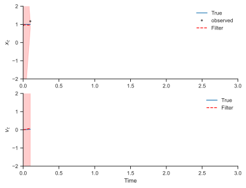
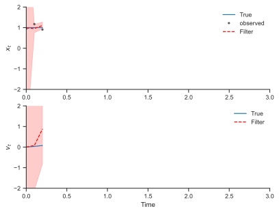
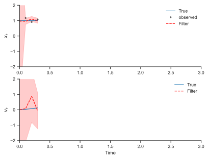
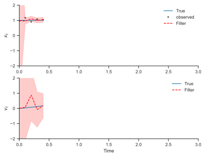
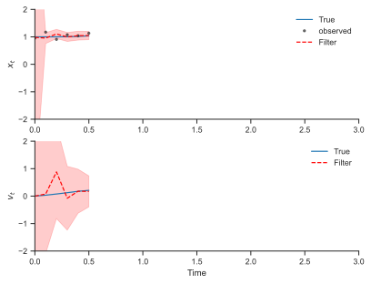
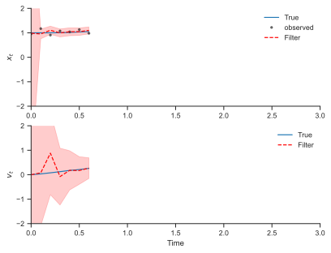
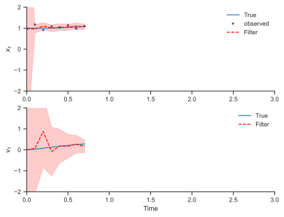
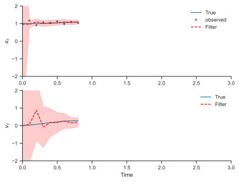
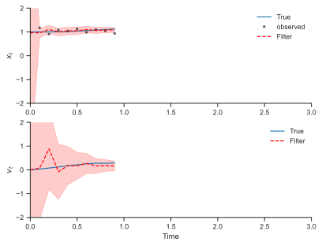
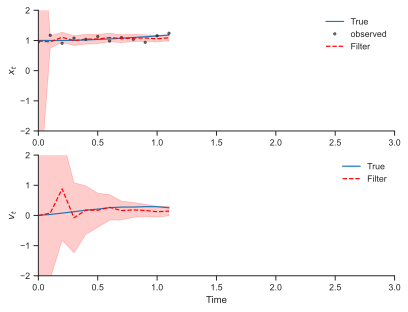
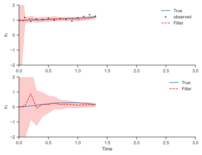
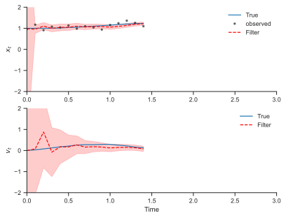
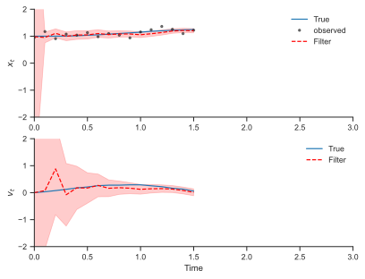
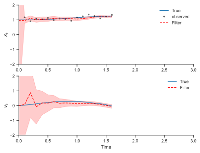
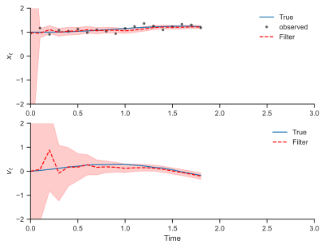
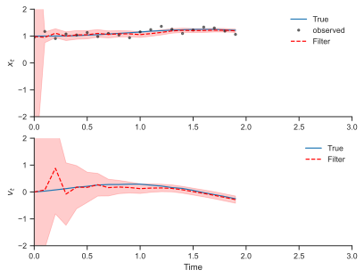
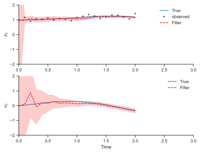
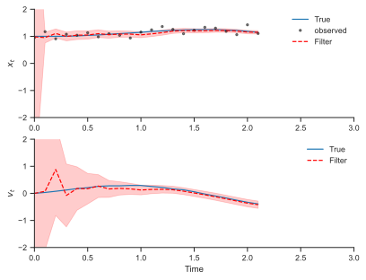
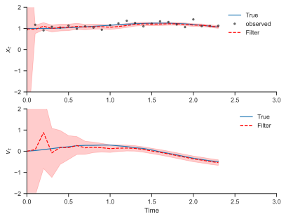
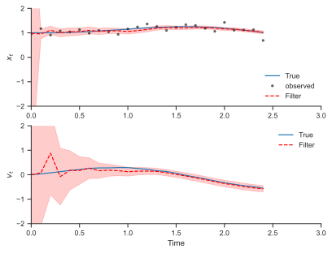
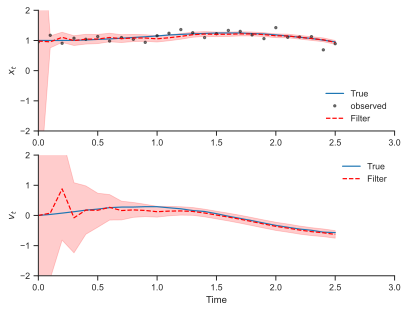
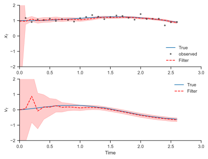
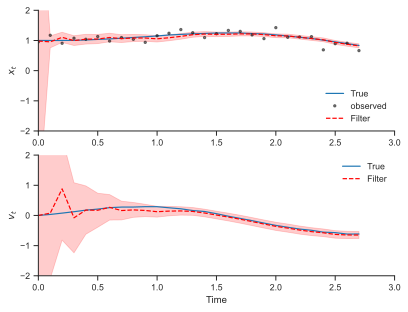
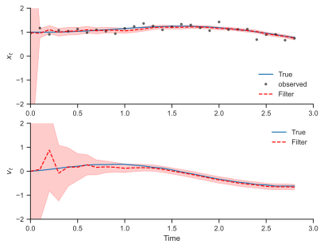
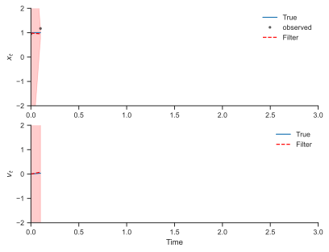
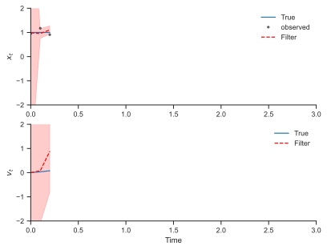
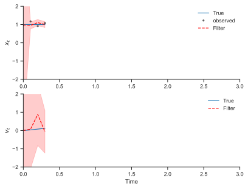
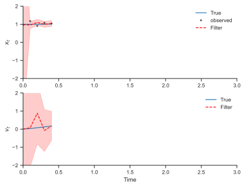
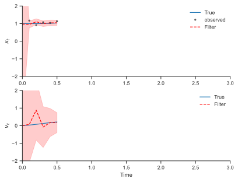
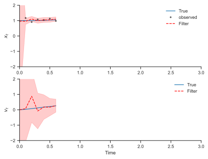
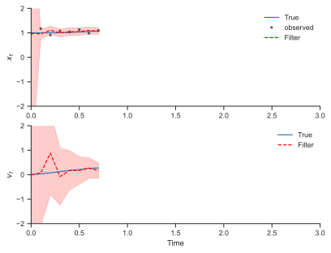
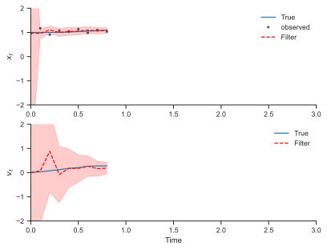
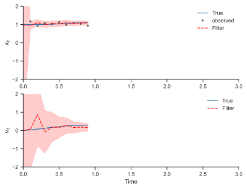
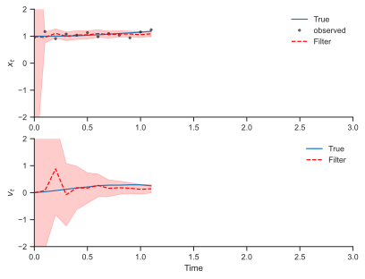
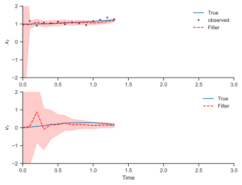
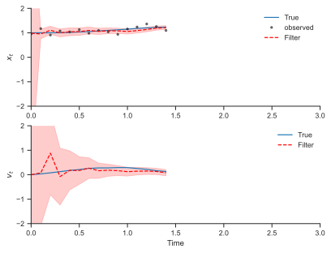
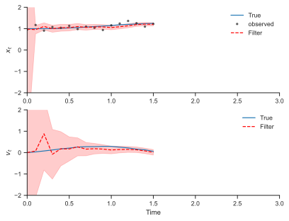
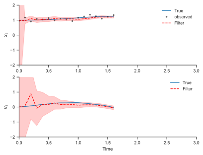
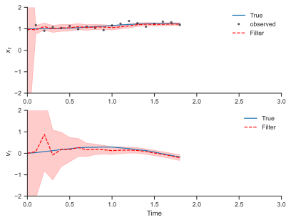
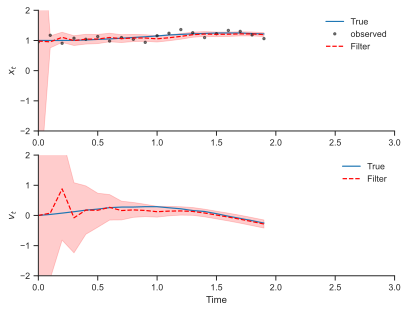
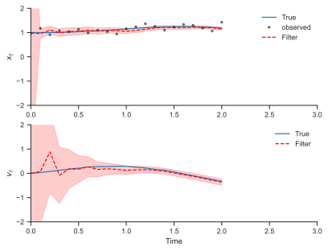
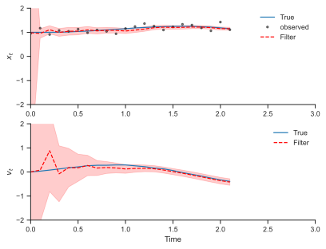
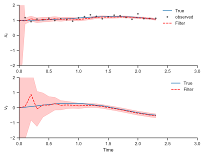
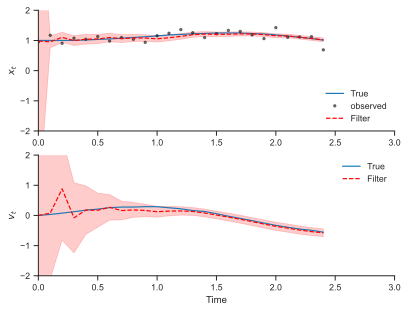
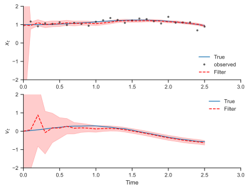
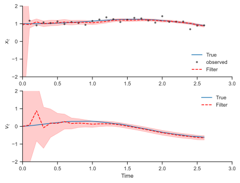
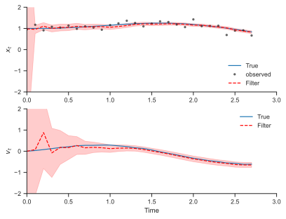
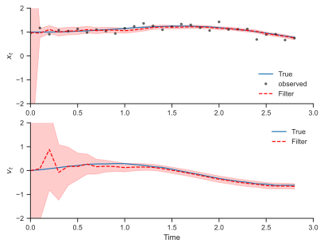
Smoothing#
@eqx.filter_jit
@partial(vmap, in_axes=(None, None, None, None, 0))
def particle_smoother_sampler(model, particles, log_weights, us, key):
def f(carry, data_t):
x_ts, log_w_ts, u = data_t
x_tp1, key = carry
log_trans_prob = model.pairwise_log_prob_transition(x_tp1[None, :], u, x_ts).flatten()
log_v_ts = log_w_ts + log_trans_prob
log_v_ts = log_v_ts - jax.scipy.special.logsumexp(log_v_ts)
key, subkey = jr.split(key)
v_ts = jnp.exp(log_v_ts)
x_t = jr.choice(subkey, x_ts, p=v_ts)
return (x_t, key), x_t
x_Ts = particles[-1]
log_w_Ts = log_weights[-1]
w_Ts = jnp.exp(log_w_Ts)
key, subkey = jr.split(key)
x_T = jr.choice(subkey, x_Ts, p=w_Ts)
init = (x_T, key)
_, trajectory = jax.lax.scan(f, init,
(particles[-2::-1], log_weights[-2::-1],
us[-1::-1]))
trajectory = jnp.concatenate([x_T[None, :], trajectory], axis=0)
return trajectory[::-1]
keys = jr.split(key, 300)
trajectories = particle_smoother_sampler(model, particles, log_weights, us[:200], keys)
smooth_p025, smooth_p50, smooth_p975 = jnp.percentile(trajectories, jnp.array([2.5, 50., 97.5]), axis=0)
fig, ax = plt.subplots(2, 1, figsize=(8, 4), dpi=300)
ax[0].plot(ts[:200], xs[:200, 0], label='True')
ax[1].plot(ts[:200], xs[:200, 1], label=r'True')
ax[0].plot(ts[:200], ys[:200], 'k.', label='observed', alpha=0.5)
ax[0].plot(its, mean[:, 0], label='Filter', linestyle='--', color='red')
ax[0].fill_between(its, mean[:, 0] - 2 * std[:, 0], mean[:, 0] + 2 * std[:, 0], alpha=0.2, color='red')
ax[1].plot(its, mean[:, 1], label=r'Filter', linestyle='--', color='red')
ax[1].fill_between(its, mean[:, 1] - 2 * std[:, 1], mean[:, 1] + 2 * std[:, 1], alpha=0.2, color='red')
ax[0].plot(its, smooth_p50[:, 0], label='Smoother', linestyle='--', color='green')
ax[0].fill_between(its, smooth_p025[:, 0], smooth_p975[:, 0], alpha=0.2, color='green')
ax[1].plot(its, smooth_p50[:, 1], label=r'Smoother', linestyle='--', color='green')
ax[1].fill_between(its, smooth_p025[:, 1], smooth_p975[:, 1], alpha=0.2, color='green')
ax[0].legend(frameon=False)
ax[1].set_xlabel('Time')
ax[0].set_ylabel(r'$x_t$')
ax[1].set_ylabel(r'$v_t$')
ax[1].legend(frameon=False)
ax[0].set_ylim(-2, 2)
ax[1].set_ylim(-2, 2)
sns.despine(trim=True)
fig.savefig('duffing_smooth.png')
fig, ax = plt.subplots(2, 1, figsize=(8, 4), dpi=300)
ax[0].plot(ts[:20], xs[:20, 0], label='True')
ax[1].plot(ts[:20], xs[:20, 1], label=r'True')
ax[0].plot(ts[:20], ys[:20], 'k.', label='observed', alpha=0.5)
ax[0].plot(its[:21], mean[:21, 0], label='Filter', linestyle='--', color='red')
ax[0].fill_between(its[:21], mean[:21, 0] - 2 * std[:21, 0], mean[:21, 0] + 2 * std[:21, 0], alpha=0.2, color='red')
ax[1].plot(its[:21], mean[:21, 1], label=r'Filter', linestyle='--', color='red')
ax[1].fill_between(its[:21], mean[:21, 1] - 2 * std[:21, 1], mean[:21, 1] + 2 * std[:21, 1], alpha=0.2, color='red')
ax[0].plot(its[:21], smooth_p50[:21, 0], label='Smoother', linestyle='--', color='green')
ax[0].fill_between(its[:21], smooth_p025[:21, 0], smooth_p975[:21, 0], alpha=0.2, color='green')
ax[1].plot(its[:21], smooth_p50[:21, 1], label=r'Smoother', linestyle='--', color='green')
ax[1].fill_between(its[:21], smooth_p025[:21, 1], smooth_p975[:21, 1], alpha=0.2, color='green')
ax[0].legend(frameon=False)
ax[1].set_xlabel('Time')
ax[0].set_ylabel(r'$x_t$')
ax[1].set_ylabel(r'$v_t$')
ax[1].legend(frameon=False)
ax[0].set_ylim(-2, 2)
ax[1].set_ylim(-2, 2)
sns.despine(trim=True)
fig.savefig('duffing_smooth_20.png')
Expectation-Maximization#
@eqx.filter_jit
@partial(vmap, in_axes=(None, 0, None, None))
def log_prob(model, xs, us, ys):
log_prob_init = model._log_prob_init(xs[0])
def f(carry, xuy):
x_prev = carry
x_next, u_prev, y_next = xuy
log_prob_t = model._log_prob_transition(x_next, u_prev, x_prev)
log_prob_o = model._log_prob_observation(y_next, x_next)
return x_next, log_prob_t + log_prob_o
init = xs[0]
_, log_prob_ts = jax.lax.scan(f, init, (xs[1:], us, ys))
return log_prob_init + jnp.sum(log_prob_ts, axis=0)
trajectories[:, 1:].shape
(300, 200, 2)
log_prob(model, trajectories, us[:200], ys[:200])
Array([2111.057 , 2121.517 , 2136.097 , 2139.9404, 2142.5762, 2135.7158,
2132.8237, 2152.0698, 2154.0835, 2128.3755, 2131.955 , 1283.2355,
2132.4446, 2117.7031, 2116.137 , 2125.9268, 2132.4624, 2123.2766,
2126.653 , 2134.9104, 2125.619 , 2152.343 , 2147.2407, 2133.9736,
2116.6338, 2144.6672, 2168.7324, 2144.8154, 2126.141 , 2115.5781,
2138.6062, 2138.683 , 2121.6565, 2143.3418, 2130.8867, 2125.3635,
2126.9214, 2141.9807, 2121.1653, 2117.9348, 2141.5642, 2126.114 ,
2132.3123, 2131.2876, 2140.5786, 2142.6196, 2171.9143, 2134.9517,
2155.206 , 2115.2349, 2134.258 , 2139.0273, 2135.0857, 2113.071 ,
2125.727 , 2123.504 , 1317.1672, 2141.459 , 2147.5486, 2136.5713,
2108.124 , 2119.8623, 2129.7607, 2149.643 , 2142.9673, 2156.27 ,
2123.4832, 2140.6404, 2111.506 , 2120.8765, 2103.4136, 2139.4536,
2129.2744, 2147.2107, 2137.99 , 2131.2222, 2137.3416, 2113.6082,
2144.2734, 2138.8335, 2092.4016, 2107.9868, 2108.153 , 2145.9487,
2119.7278, 2113.8074, 2132.9272, 2136.6265, 2131.9604, 2139.2068,
2135.217 , 2145.2993, 2140.4272, 2136.127 , 2132.4138, 2119.0896,
2105.2893, 2132.9956, 2129.3245, 2133.139 , 2125.833 , 2140.1487,
2162.6147, 2136.2595, 2120.031 , 2142.6028, 2131.202 , 2120.8413,
2146.4468, 2097.5625, 2151.2917, 2126.0232, 2152.2905, 2155.4124,
2146.7534, 2144.4722, 2131.651 , 2149.3093, 2145.937 , 2125.2866,
2121.578 , 2137.307 , 2141.8237, 2131.5198, 2123.1072, 2133.1982,
2121.0366, 2123.4827, 2130.2686, 2126.021 , 2119.7483, 2118.5474,
2135.1067, 2115.1262, 2141.5923, 2133.8208, 2132.6086, 2116.3914,
2122.8 , 2128.8145, 2133.6655, 2132.1604, 2126.28 , 2139.703 ,
2114.107 , 2138.4028, 2123.3125, 2134.5137, 2133.3516, 2146.1765,
2132.1877, 2148.5396, 2138.8064, 2145.801 , 2139.964 , 2087.5396,
2123.1348, 2143.381 , 2117.902 , 2128.5017, 2143.017 , 2135.8484,
2116.646 , 2112.5066, 2121.152 , 2119.0332, 2104.8076, 2123.3625,
2145.0417, 2148.4849, 2123.0366, 2120.351 , 2136.5847, 2150.3828,
2150.7036, 2140.0806, 2127.5657, 2127.6643, 2113.1077, 2143.2844,
2125.968 , 2128.0867, 2137.9683, 2131.6138, 2127.0413, 2134.107 ,
2118.386 , 2135.474 , 2136.8933, 2113.809 , 2156.8997, 2097.1035,
2130.5837, 2120.114 , 2130.6753, 2123.2883, 2128.7712, 2141.2114,
2128.212 , 2128.264 , 2111.7485, 2119.9949, 2127.2378, 2123.6167,
2135.0137, 2155.0103, 2148.1196, 2156.5671, 2138.787 , 2134.239 ,
2147.0273, 2119.464 , 2123.0735, 2135.944 , 2151.4175, 2137.6663,
2135.6975, 2132.5168, 2132.4773, 2127.8464, 2120.632 , 2141.4978,
2146.7478, 2145.1633, 2157.4067, 2132.0269, 2140.0708, 2148.7017,
2131.6436, 2132.1404, 2129.3225, 2133.968 , 2125.5159, 2117.228 ,
2148.136 , 2142.4895, 2134.4316, 2122.9521, 2108.1606, 2110.4424,
2138.6453, 2104.785 , 2101.8462, 2126.3777, 2138.301 , 2142.1272,
2123.4597, 2122.0698, 2150.7148, 2120.3838, 2112.6606, 2117.835 ,
2133.7498, 2137.504 , 2099.2449, 2093.3748, 2162.3203, 2135.4492,
2125.7673, 2155.3223, 2106.4727, 2150.962 , 2128.8013, 2141.4807,
2138.3071, 2113.3267, 2147.4075, 2157.5808, 2160.6238, 2137.2815,
2131.922 , 2123.0066, 2139.1123, 2147.148 , 2134.4873, 2134.1643,
2166.516 , 2133.2834, 2157.2756, 2130.273 , 2149.2937, 2126.0908,
2120.0874, 2138.5122, 2110.5469, 2152.2822, 2120.914 , 2134.1638,
2148.8306, 2122.0813, 2148.1777, 2128.2327, 2123.1716, 2134.9304,
2129.0732, 2145.264 , 2132.257 , 2124.2603, 2137.4797, 2118.9724], dtype=float32)
def expectation_maximization(model, us, ys, key, optimizer, num_particles=1000, num_trajectories=10, num_m_single_steps=10):
def e_step(model, e_key):
particles, log_weights = particle_filter(model, us, ys, e_key, num_particles=num_particles)
return particles, log_weights
def loss_fn(model, trajectories):
return -jnp.mean(log_prob(model, trajectories, us, ys))
@eqx.filter_jit
def m_step_single(model, trajectories, opt_state):
print(loss_fn(model, trajectories))
quit()
grads = jax.grad(loss_fn)(model, trajectories)
updates, opt_state = optimizer.update(
grads, opt_state, eqx.filter(model, eqx.is_array)
)
model = eqx.apply_updates(model, updates)
return model, opt_state
def m_step(model, particles, log_weights, opt_state, m_key):
model_old = model
for _ in range(num_m_single_steps):
m_key, sub_m_key = jr.split(m_key)
m_keys = jr.split(sub_m_key, num_trajectories)
trajectories = particle_smoother_sampler(model_old, particles, log_weights, us, m_keys)
model, opt_state = m_step_single(model, trajectories, opt_state)
return model, opt_state
opt_state = optimizer.init(eqx.filter(model, eqx.is_array))
for i in range(10):
key, e_key, m_key = jr.split(key, 3)
particles, log_weights = e_step(model, e_key)
model, opt_state = m_step(model, particles, log_weights, opt_state, m_key)
return model
from optax import adam
optimizer = adam(1e-3)
model = expectation_maximization(model, us[:200], ys[:200], key, optimizer)
Traced<ShapedArray(float32[])>with<DynamicJaxprTrace(level=1/0)>
Traced<ShapedArray(float32[])>with<DynamicJaxprTrace(level=1/0)>
Traced<ShapedArray(float32[])>with<DynamicJaxprTrace(level=1/0)>
The Kernel crashed while executing code in the current cell or a previous cell.
Please review the code in the cell(s) to identify a possible cause of the failure.
Click <a href='https://aka.ms/vscodeJupyterKernelCrash'>here</a> for more info.
View Jupyter <a href='command:jupyter.viewOutput'>log</a> for further details.
out2.shape
(199, 200)